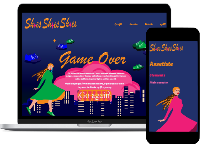

I tema 4 ble vi introdusert til animasjon gjennom CSS og Javascript for å skape et interaktiv spill som engasjerte og motiverte brukeren. Vi lærte hvordan du kan bruke metoder for å skape bevegelse i figurene og i billedet. Jeg brukte javaskript til å adde og fjerne klasser så jeg kunne få de animasjonene jeg ønsket. Selve bevegelsene lagde jeg i CSS med enten translate, rotate eller scale i en keyframe. Når du trykket på mitt onde element skulle den rotere rundt før den forsvinner. Dette gjorde jeg gjennom å transformere 0% fra rotate(0) til 100% transform rotate(360deg). I javaskript kunne du snakke til disse klassene og få dem til å adde eller remove ved bestemte handlinger, som click.
